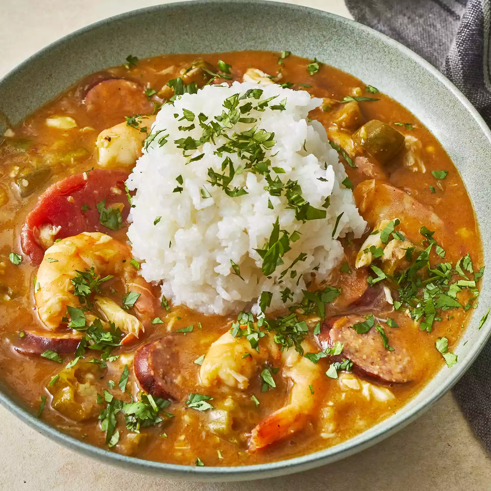

Gumbo

Description:
This is gumbo a classic in Cajun culture. There are a variety of ways to make this dish. It normally contains a combination of seafoods, meats, seasoning, and herbs. However, we will be showing you our version, a unique yet delicious spin on the dish.
- 1 cup all-purpose flour
- 3/4 cup bacon drippings
- 1 cup coarsely chopped celery
- 1 large onion, coarsely chopped
- 1 large green bell pepper, coarsely chopped
- 2 cloves garlic, minced
- 1 pound andouille sausage, sliced
- 3 quarts water
- 6 cubes beef bouillon
- 1 tablespoon white sugar
- 2 tablespoons hot pepper sauce (such as Tabasco), or to taste
- 1/2 teaspoon Cajun seasoning blend (such as Tony Chachere's), or to taste
- 4 bay leaves
- 1/2 teaspoon dried thyme leaves
- 1 (14.5 ounce) can stewed tomatoes
- 1 (6 ounce) can tomato sauce
- 4 teaspoons file powder, divided
- 2 tablespoons bacon drippings
- 2 (10 ounce) packages frozen cut okra, thawed
- 2 tablespoons distilled white vinegar
- 1 pound lump crabmeat
- 3 pounds uncooked medium shrimp, peeled and deveined
- 2 tablespoons Worcestershire sauce